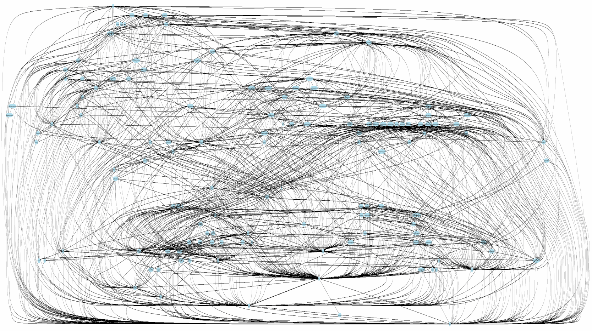

Unretrofittable: Starting off right
Some abstractions are hard to (un|re)do...
Chris Winters (@cwinters)
Pittsburgh Techfest 2014
Things start out great
Greenfield projects are the best, right?
It all made sense at the time

Does it matter why?
"agile" vs AGILE

Frying pan?

Help others be awesome
...what we do is a means, not an end

Empathy with what?
Side effects
Lever 1: Creating a usable system
One command to create a system with real(-ish) data.
Hard part: real(-ish)
"But I have fixtures!"

Can your domain experts edit them?
Abstractions shape ideas

So many forms

Thinking in tasks
Tasks will cause you pain
Fowler: "If it hurts, do it more often."
Side effects
Quick startup for new hires or changing teams. Which means
people can change teams more often!
Domain experts define and maintain data
Sales + marketing can create and customize demos
Potential users can create demos with their own data (woo cloud!)
Head off model drift and too-generic data models
Why do you even?

Cooler than it sounds
Users love this (mostly), support staff adore it
More abstractions

Refactoring resistant
Record tasks, not results
What could we do with that record?
Other side effects
Confidence in the system: things can be explained!
Exposing intent -- RecoverPassword
vs ResetPassword
and SendPasswordRecoveryEmail
Lever 3: Undo

Again with the tasks
Grace period
Wait a while to do your work, don't do it if asked
No free lunch
Change as Commands
Represent change as commands, represent undone change as commands
Side effects
So much happiness!
Lever n: Feature flags
Compile/build setting controlling feature
accessibility
Why?

Thinking differently about features
Full functionality vs not breaking
Not the prettiest...

I'll just code that up...
You don't have to! (Flip, Setler, Togglz)
But I want clean!
Side effects++
Release more often; A/B testing

Related: Kill switch

You might also know me...
Runtime flag removing functionality due to
disruption, planned or not
Wouldn't read-only be nice?
Why? Enabling schema change for broken databases
Side effects
<discuss>What actually happens when things
fail?</discuss>
vs